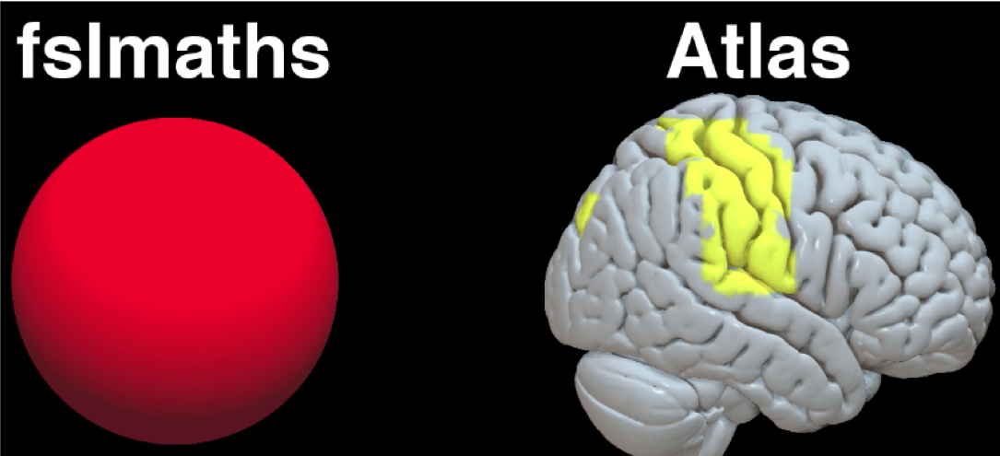

Note
This section is under construction; please check back soon!
ROI Analysis
Background
We’ve covered a lot of ground so far, and by this time you should be able to run a group-level analysis from start to finish: Processing the subjects, creating a model, and then fitting the model for each run for each subject. Group level analyses then allow you to determine whether an effect is consistent enough in the same area across subjects in order to pass a significance threshold that we define. We then used FSLeyes to view the results and get a sense for whether the results seem reasonable. Given previous studies and theory about what the prefrontal cortex does, looking at these maps seemed to lend evidence to our hypothesis that incongruent trials led to greater activity than congruent trials.
{kind=link}
However, everything we’ve done so far is what we call whole-brain analysis. In a whole-brain analysis, we estimate a model at each voxel - that same “mass univariate” approach I discussed last week - and create contrast maps that cover the entire brain. However, we may not be interested in the whole brain. For example, we may not be interested in the cerebellum, and instead only have specific hypotheses about activation within the prefrontal areas. In that case we would gain more power by restricting our analysis to a subset of voxels. Furthermore, the whole-brain maps that we generate can hide important details about the effects that we’re studying. We may find a significant effect of incongruent-congruent, but the reason the effect is significant could be because incongruent is greater than congruent, or because congruent is much more negative than congruent, or some combination of the two. The only way to determine what is driving the effect is by ROI analysis, and this is especially important when dealing with interactions and more sophisticated designs.
This practical will be an introduction to what ROIs are and what they look like, in addition to how to create ROIs and do ROI analysis in FSL. Lastly, we will cover some concepts specific to ROI analysis that you should be aware of – in particular, non-independence and circularity.
===VIDEO: ROI INTRODUCTION===
Have them watch this introductory video: https://www.youtube.com/watch?v=196ymIPMMww
And also point out that the SPM tutorial on ROI analysis begins at about 1:48, which they can ignore for now. In other words, watch the video up to the 1:48 mark.
Next, watch this video about how to do ROI analysis in FSL using featquery:
https://www.youtube.com/watch?v=N9hE0vAztnQ
I’ll need to make another video about how to do it from the command line. Sad!
===END VIDEO=== Let’s begin with what an ROI is. An ROI, or region of interest, is a subset of voxels that you want to restrict your analysis to, in order to increase power. This ROI can be defined based on theory - for example, an anatomical region that you assume is involved in your condition, based on previous papers or models - or the coordinates of activation from other studies investigating the same research question you are.
===VIDEO: CREATING MASKS IN FSLEYES===
SCRIPT:
To do an anatomical ROI analysis, first open FSLeyes and open the standard brain you warped to (in this case, the MNI152_T1_2mm brain). Open up the Atlas panel and select an anatomical region by clicking on a region and selecting “Show” in the Atlas panel. From the display window, highlight the mask you just created and click on the Disk icon to save it. Rename it to whatever you want.
===END VIDEO===
Today we will focus on how to do an ROI analysis using fslmeants, a command including in the FSL library. First we will need to navigate to the directory containing the contrast we are interested in. Remember that we’ve computed three contrasts: 1)Incongruent 2)Congruent 3)Incongruent-Congruent
These will be found within the 2ndLevel folder (here, Flanker_2ndLevel.gfeat) which contains one contrast estimate per subject (i.e., 26 for each contrast). To do an ROI analysis for Incongruent-Congruent, we would need to navigate to: Flanker_2ndLevle.gfeat/cope3.feat/stats Which contains one z-statistic per subject. You can merge the z-statistics together using fslmerge: fslmerge –t allZstats.nii.gz zstat* Which uses a wildcard (“*”) to indicate every file that begins with “zstat”. You can then extract the data from the subject (one contrast estimate per subject) using fslmeants: fslmeants –i allZstats.nii.gz –m <path/to/mask/>PCG.nii.gz In which you can replace <path/to/mask> with the path pointing to your mask. For example, if your mask was saved in a directory three levels above the current one, you would write: fslmeants –i allZstats.nii.gz –m ../../../PCG.nii.gz The same procedure can be done for contrasts 1 and 2 by navigating to their corresponding directories.
*CONCEPT: DOUBLE DISSOCIATIONS*
However, only reporting the contrast estimate, or interaction term if you have one, doesn’t tell you what is driving the effect. To take a simple example, assume that we ran an experiment contrasting left and right button presses, and let’s say that we found a significant contrast effect of Left-Right. It could be that in this ROI, Left button presses elicit more activation than Right button presses; or that Left button presses aren’t significantly different from zero, but Right button presses are negative; or it could be some combination of the two. The only way to find out is to extract the parameter estimates for Left and Right button presses separately, and then plot them and run the necessary tests. ROIs are also useful for testing double dissociations, or whether a condition activates region A but not region B, while another condition activates region B, but not region A. In our current example, we may want to test whether Left button presses are selective for the right motor cortex, but not the left motor cortex, and vice versa for Right button presses. In this case we would have to create another ROI in the left motor cortex. Again, I want to emphasize that these are placeholders you can use for your data, which are probably far more interesting.
*CONCEPT: DOUBLE-DIPPING (AKA BIASED OR CIRCULAR ANALYSIS)*
One potential pitfall with ROI analyses that you should avoid is called non-independence, or biased ROI analyses. You may also hear them referred to as circular ROI analyses. This is a very important conceptual and statistical issue that has a long history going back a decade.
The problem is this. Let’s say that you’ve just run a whole-brain analysis of Left-Right, and you get a contrast map that looks like this, nice and significant, thresholded at p < 0.001 and even doing all that stuff Eklund talked about. So you know you have an effect, but let’s say you didn’t have a hypothesis going into the experiment about where you would find the effect. What you may be tempted to do is use the voxels that passed your significance threshold as an ROI, and then run inferential statistics on parameters extracted from that ROI. This is a biased analysis because these voxels by definition are going to have significant results; and furthermore it is likely they will contain noise that biases their effect size to be artificially high, and it’s impossible to tell how much. Any inference you do in this ROI will therefore be invalid. There are a couple of ways to avoid this problem, such as creating an anatomical region or a sphere based on the peak coordinates from another study like we just did.